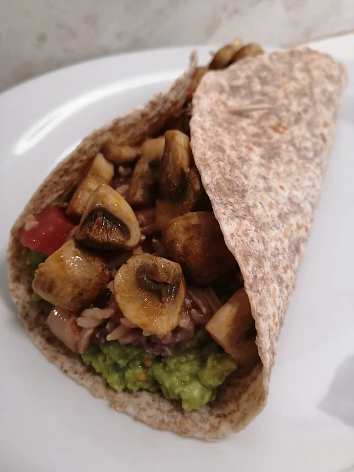

Wrap Vegan
Tempo de preparação
10min
Horas de Cozimento
20min
Tempo Total
30min
Porções
3/4

Ingredientes
Arroz integral de tomate:
- arroz integral q.b
- sal q.b
- azeite q.b
- 1 folha de loureiro
- ½ cebola picada
- 2 dentes de alho
- 1 lata (390g) de tomates picados
Feijão vermelho:
- 1 lata (260g) de feijão vermelho escorrido
- sal q.b
- pimenta preta q.b
- alho em pó q.b
- sumo de limão q.b
Guacamole:
- 1 abacate maduro
- 4 tomates cherry cortados ao meio
- sal q.b
- pimenta preta q.b
- alho em pó q.b
- azeite q.b
- sumo de ½ limão
Cogumelos assados no forno:
- 8 cogumelos laminados
- sal q.b
- pimenta preta q.b
- alho em pó q.b
- pimentão doce q.b
- azeite q.b
Para finalizar:
- 4 wraps integrais
Instruções
- Num tacho com água coloque o arroz integral, tempere com sal, um fio de azeite e a folha de loureiro. Deixe cozer por 20 min. em fogo alto, e tenha em atenção durante este tempo, para colocar água sempre que necessário até o arroz ficar al dente.
- Enquanto o arroz coze, num tabuleiro forrado com papel vegetal coloque os cogumelos laminados e tempere com sal, pimenta preta, alho em pó, pimentão doce e um fio de azeite. Misture os temperos com os cogumelos, e leve ao forno pré aquecido a 180ºC durante 10-15 minutos.
- Num prato, coloque o feijão vermelho escorrido e leve ao microondas a aquecer por um minuto. Esmague os grãos com um garfo e tempere com sal, pimenta preta, alho em pó e um pouco de sumo de limão. Misture novamente até ficar uma pasta e reserve.
- Numa tigela, esmague o abacate com os tomates cherry e tempere com sal, pimenta preta, alho em pó, azeite e sumo de meio limão. Quando estiver bem moído reserve.
- Neste momento o arroz já deve estar cozido por isso, numa sertã, salteie a cebola com o alho picado num fio de azeite até ficarem dourados. Adicione o arroz escorrido e deixe a saltear com o refogado durante 3 minutos. Adicione então a lata de tomates picados e deixe ferver durante 5 minutos. Está pronto.
- Para preparar, aqueça o wrap dos dois lados, espalhe um pouco de guacamole, pasta de feijão por cima, o arroz integral de tomate e os cogumelos assados no forno! Se conseguir, tente enrolar o wrap e acompanhe com uma salada de alface e cebola!